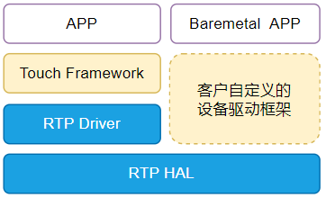
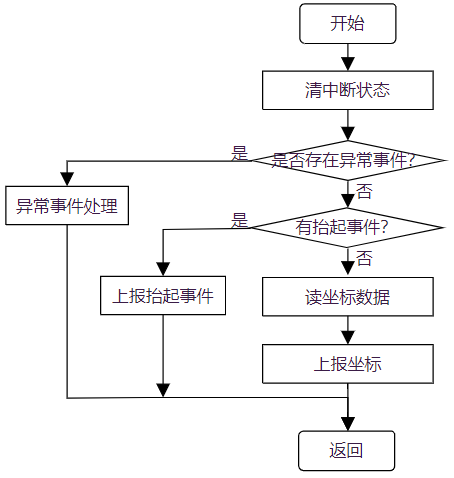

设计说明
15 Jan 2024
Read time: 3 minute(s)
源码说明
源代码位于 bsp/artinchip/：
-
bsp/artinchip/drv/rtp/drv_rtp.c，RTP Driver 层实现
-
bsp/artinchip/hal/rtp/hal_rtp.c，RTP HAL 层实现
-
bsp/artinchip/include/hal/hal_rtp.h，RTP HAL 层接口头文件
模块架构
RTP 驱动 Driver 层采用 RT-Thread 的 Touch 设备驱动框架，如果只使用 HAL 层也可以支持 Baremetal 方式的应用场景。

关键流程设计
初始化流程
RTP 驱动的初始化接口通过 INIT_DEVICE_EXPORT(drv_rtp_init) 完成，主要是通过调用 Touch 子系统的接口 rt_device_touch_register() 注册一个 Touch 设备。
RTP 控制器的初始化过程，主要步骤有：
-
初始化模块的 clk
-
注册中断
-
初始化默认参数，使能 RTP 控制器
-
向设备框架中注册 Touch 设备
中断处理流程
图 2. RTP 驱动的中断处理流程
RTP 控制器采集的数据完全依赖中断来上报给应用层，包括触摸位置、按下、抬起信息。 流程如下图：

数据结构设计
-
struct aic_rtp_dev属于 HAL 层接口，管理 RTP 控制器的设备资源。
struct aic_rtp_dev { u32 pclk_rate; s32 pressure_det; s32 ignore_fifo_data; enum aic_rtp_mode mode; u32 max_press; u32 smp_period; u32 x_plate; u32 y_plate; u32 fuzz; u32 intr; u32 fcr; struct aic_rtp_dat latest; aicos_sem_t sem; struct aic_rtp_ebuf ebuf; }; -
struct aic_rtp_ebuf属于 HAL 层接口，用于缓存给应用层上报的坐标 event。
struct aic_rtp_event { u16 x; u16 y; u16 pressure; u16 down; }; struct aic_rtp_ebuf { u16 rd_pos; u16 wr_pos; struct aic_rtp_event event[AIC_RTP_EVT_BUF_SIZE]; };
Driver 层接口设计
以下接口是 Touch 设备驱动框架的标准接口。
struct rt_touch_ops
{
rt_size_t (*touch_readpoint)(struct rt_touch_device *touch, void *buf, rt_size_t touch_num);
rt_err_t (*touch_control)(struct rt_touch_device *touch, int cmd, void *arg);
};
| 函数原型 | rt_size_t drv_rtp_read_point(struct rt_touch_device *touch, void *buf, rt_size_t touch_num) |
|---|---|
| 功能说明 | 打开 RTP 设备，驱动会使能 RTP 控制器 |
| 参数定义 |
touch - 指向 Touch 设备
buf - 用于保存返回的坐标事件信息，struct rt_touch_data 类型
touch_num - 要读取的坐标个数，目前
|
| 返回值 | 1，成功读取到一个坐标事件； 0，失败 |
| 注意事项 | - |
| 函数原型 | rt_err_t drv_rtp_control(struct rt_touch_device *touch, int cmd, void *arg) |
|---|---|
| 功能说明 | RTP 驱动的 ioctl 接口 |
| 参数定义 |
touch - 指向 Touch 设备
cmd - ioctl 命令码
args - ioctl 命令相应的参数
|
| 返回值 | 0，成功；<0，失败 |
| 注意事项 | 目前仅支持 RTP 中断的使能和关闭，其他 ioctl 命令将返回-1 |
HAL 层接口设计
HAL 层的函数接口声明存放在 hal_rtp.h
中，主要接口有：
void hal_rtp_status_show(struct aic_rtp_dev *rtp); void hal_rtp_enable(struct aic_rtp_dev *rtp, int en); void hal_rtp_int_enable(struct aic_rtp_dev *rtp, int en); void hal_rtp_auto_mode(struct aic_rtp_dev *rtp); irqreturn_t hal_rtp_isr(int irq, void *arg); u32 hal_rtp_ebuf_read_space(struct aic_rtp_ebuf *ebuf); #define hal_rtp_ebuf_write_space(buf) \ (AIC_RTP_EVT_BUF_SIZE - hal_rtp_ebuf_read_space(buf)) #define hal_rtp_ebuf_full(buf) (hal_rtp_ebuf_write_space(buf) == 0) #define hal_rtp_ebuf_empty(buf) (hal_rtp_ebuf_read_space((buf)) == 0) s32 hal_rtp_ebuf_write(struct aic_rtp_ebuf *ebuf, struct aic_rtp_event *e); s32 hal_rtp_ebuf_read(struct aic_rtp_ebuf *ebuf, struct aic_rtp_event *e);